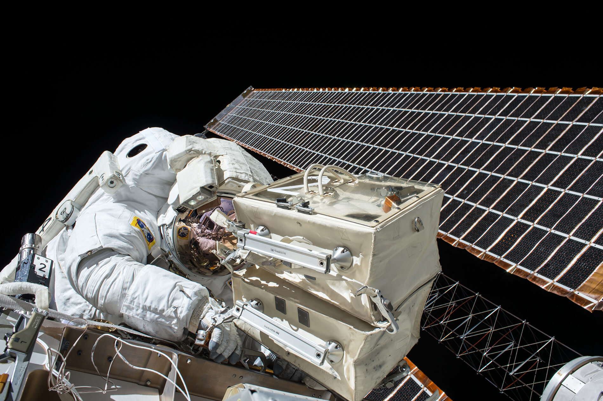
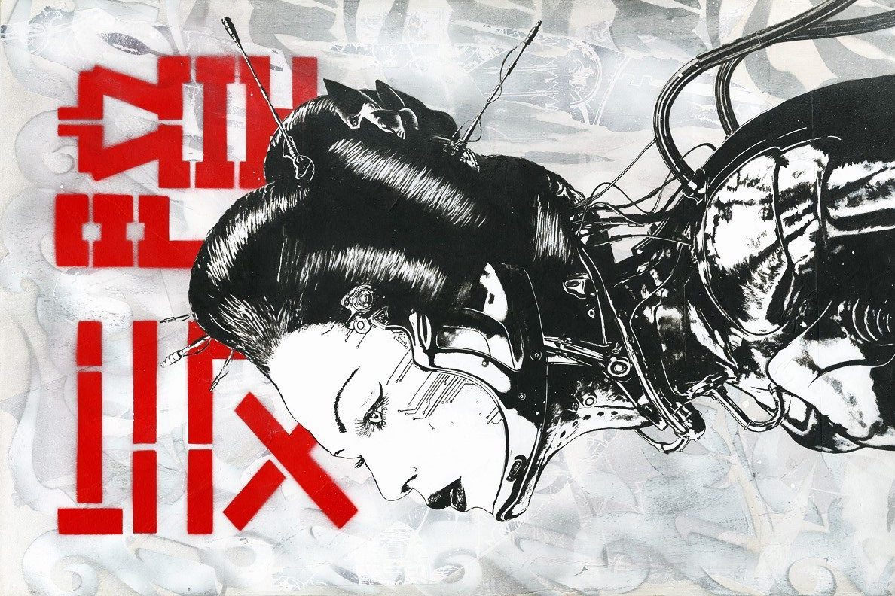

I'm a 2nd year Ph.D. CD, M.S. ML student at Carnegie Mellon University . My research interest is mainly in multi-agent robotic system, robotic learning, reinforcement learning and collective robotic construction. Constantly fascinated by elegant system architectures, I long for creating intelligent robot "society" with various hierarchical organization , collective behaviour , seamless local / global communication , and interaction with human . Besides that, I enjoy experiencing every aspects of design, creation and construction, partly because of my background in architecture and mechanical engineering. I can be reached at yuningw [at] andrew [dot] cmu [dot] edu .


Z. Fang, Y. Wu , A. Hassonjee, A. Bidgoli, D.C. Llach. An Architectural Framework for Distributed Semi-Autonomous Construction: Using Reinforcement Learning to Support Scalable Multi-Drone Construction in Dynamic Environments. Conference of the Association for Computer Aided Design in Architecture (ACADIA). 2020.